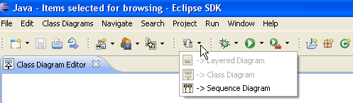

Switch from one diagram type to another
Architexa allows you to quickly and easily change how you visualize your code. You can switch from one diagram to another in a number of ways.When exploring a diagram it is common to find a portion that is interesting, relevant, and might be helpful to view from a different perspective. To accomplish this:
If you are exploring items in a class diagram and there are a lot of calls between different methods it can be difficult to understand what order calls are made in. In this case switching to a sequence diagram can be helpful. To accomplish this simply

---- Your question not answered? Send an email to support@architexa.com ----